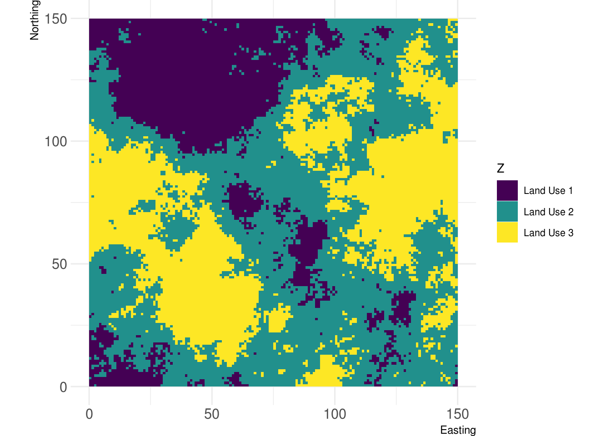
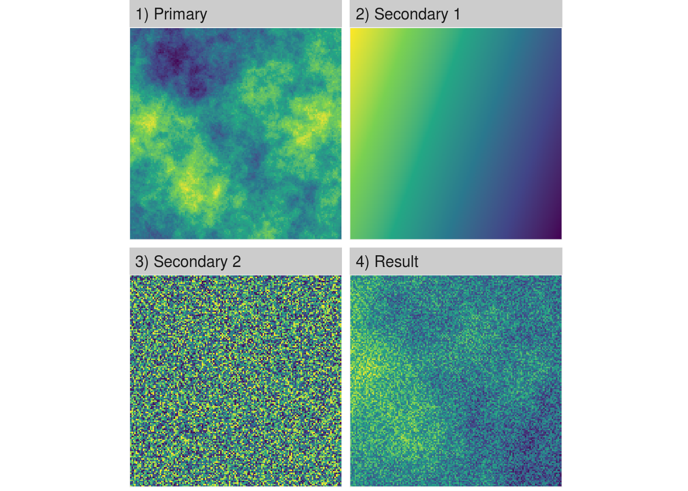

landscapetools provides utility functions for some of the less-glamorous tasks involved in landscape analysis:
Utilities:
-
util_binarize: Binarize continuous raster values, if > 1 breaks are given, return a RasterBrick. -
util_classify: Classify a raster into proportions based upon a vector of class weightings. -
util_merge: Merge a primary raster with other rasters weighted by scaling factors. -
util_raster2tibble,util_tibble2raster: Coerce raster* objects to tibbles and vice versa. -
util_rescale: Linearly rescale element values in a raster to a range between 0 and 1. -
util_writeESRI: Export raster objects as ESRI asciis (with Windows linebreaks).
Visualization
-
show_landscape: Plot a Raster* object with the landscapetools default theme (as ggplot) or multiple raster (RasterStack, -brick or list of raster) side by side as facets. -
show_shareplot: Plot the landscape share in subsequential buffers around a/multiple point(s) of interest
Themes:
-
theme_nlm,theme_nlm_grey: Opinionated ggplot2 theme to visualize raster (continuous data). -
theme_nlm_discrete,theme_nlm_grey_discrete: Opinionated ggplot2 theme to visualize raster (discrete data). -
theme_faceplot: Opinionated ggplot2 theme to visualize raster in a facet wrap.
Installation
You can install the released version from CRAN with:
install.packages("landscapetools")
You can install the development version from GitHub with:
# install.packages("devtools") devtools::install_github("ropensci/landscapetools")
Utilities
Classify
# Classify the landscape into land uses classified_landscape <- util_classify(fractal_landscape, n = 3, level_names = c("Land Use 1", "Land Use 2", "Land Use 3")) show_landscape(classified_landscape, discrete = TRUE)

Merge
# Merge all landscapes into one merged_landscape <- util_merge(fractal_landscape, c(gradient_landscape, random_landscape), scalingfactor = 1) # Plot an overview merge_vis <- list( "1) Primary" = fractal_landscape, "2) Secondary 1" = gradient_landscape, "3) Secondary 2" = random_landscape, "4) Result" = merged_landscape ) show_landscape(merge_vis) #> Warning: Removed 1196 rows containing missing values (geom_raster).

See also
In the examples above we make heavy use of the NLMR package. Both packages were developed together until we split them into pure landscape functionality and utility tools. If you are interested in generating neutral landscapes via a multitude of available algorithms take a closer look at the NLMR package.
Meta
- Please report any issues or bugs.
- License: GPL3
- Get citation information for
landscapetoolsin R doingcitation(package = 'landscapetools') - We are very open to contributions - if you are interested check Contributing.
- Please note that this project is released with a Contributor Code of Conduct. By participating in this project you agree to abide by its terms.